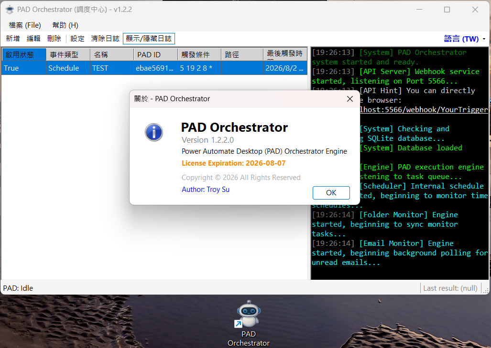
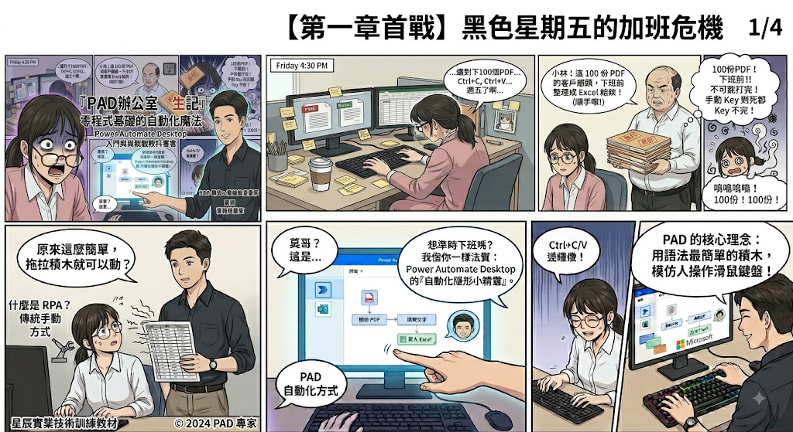
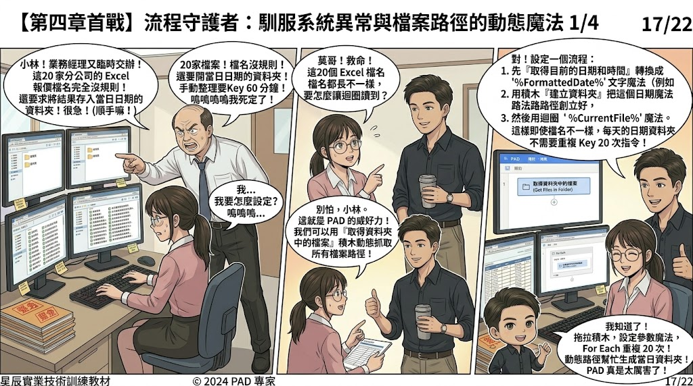
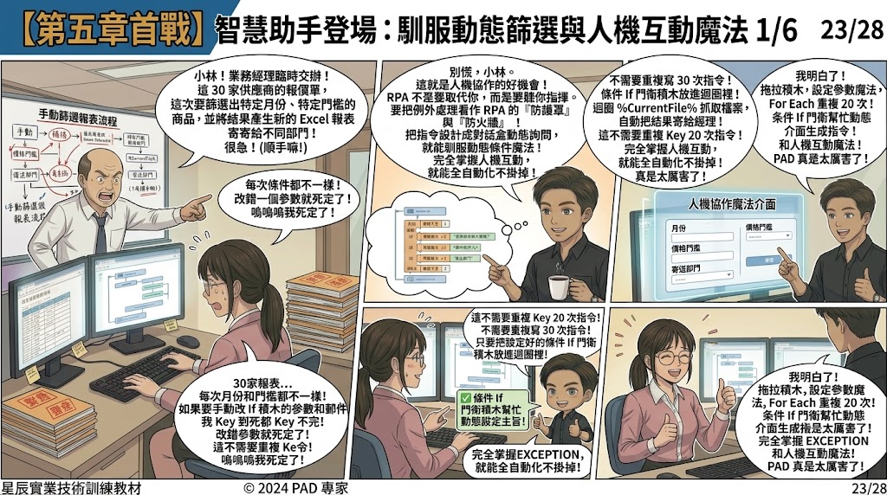

RPA / Unattended
如何用 Power Automate Desktop
做到真正的無人值守？
探討 PAD 在企業自動化中常見的排程與無人值守痛點，並提供實務上的架構設計與解決方案，讓 RPA 真正發揮 24/7 自動運作的價值。
- Tags
- PAD, RPA, 無人值守
- Read Time
- 5 Min Read
INSIGHTS & ARTICLES
Technical deep dives and solutions for automation and smart living.

RPA / Unattended
探討 PAD 在企業自動化中常見的排程與無人值守痛點，並提供實務上的架構設計與解決方案，讓 RPA 真正發揮 24/7 自動運作的價值。

RPA / Tutorial / Orchestrator
逐步圖文教學，教你如何找出 Power Automate Desktop 腳本的專屬 ID，讓 PAD Orchestrator 能夠精準呼叫與無人值守執行。

RPA / Comic / Tutorial
透過生動的技術漫畫，由 Troy Su 帶你輕鬆認識 Power Automate Desktop (PAD) 與 RPA，解決辦公室無盡複製貼上的加班危機。
RPA / Comic / Tutorial
學會 PAD 兩大核心法寶「變數收納盒」與「For Each 迴圈」，自動合併 50 份分公司 Excel 報表，準時下班！

RPA / Comic / Tutorial
掌握 PAD「網頁小精靈」與「自動郵差」，學會網頁表格擷取、If 條件門衛與 Outlook 自動發信，準時下班！

RPA / Comic / Tutorial
掌握 PAD 動態日期路徑魔法與 On Error 例外處理防護罩，馴服檔名混亂與損毀壞檔，打造堅不可摧的自動化流程！

RPA / Comic / Tutorial
掌握 PAD 自訂表單人機互動對話盒與多重條件決策，靈活應對動態篩選與分發需求，打造聽你指揮的智慧助理！
RPA / Showcase / AI
零 API 成本！展示如何透過 PAD Orchestrator 完美串接 LINE、RPA 與 Gemini，打造真正的無人值守智能助理。